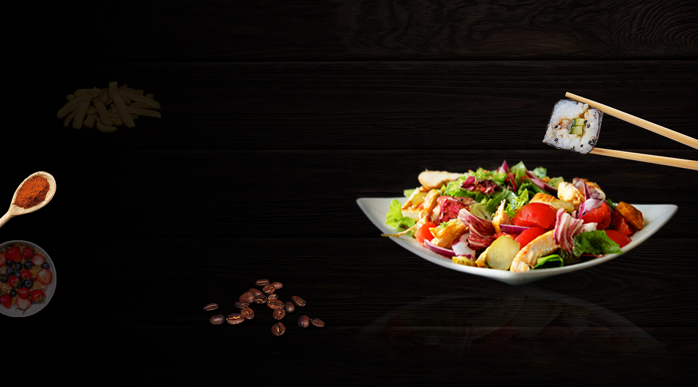

Овощной суп: пять шагов

Идея
Готовим простой овощной суп для семейного обеда
Продукты
Возьмем картофель, морковь, лук и зелень
Готовим
Подготовим овощи и последовательно добавим их в кастрюлю
Подаем
Проверим готовность овощей и добавим выбранную зелень.
Вывод
Мы описали продукты, приготовление и подачу блюда.